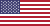
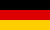
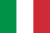

This widget displays an agenda of upcoming events in your calendar on your homescreen. The agenda is formatted in a space-efficient way. Displays each event's location and calendar color. Birthday events from Outlook and Facebook can be displayed separately.
This is a widget. You must add it to your homescreen!
I created this app in my freetime and you can download it for free. Please give me a good rating if you like it!
I'm glad about every e-mail, be it praise, critizism or an idea!

Dieses Widget zeigt die nächsten Termine in deinem Kalender auf dem Startbildschirm an. Die Liste ist platzsparend formatiert. Für jedes Ereignis werden Ort und Kalender-Farbe angezeigt. Geburtstags-Ereignisse aus Outlook und Facebook können separat behandelt werden.
Das hier ist ein Widget, das musst du auf dem Startbildschirm ablegen!
Ich habe diese App in meiner Freizeit geschrieben und Du kannst sie kostenlos downloaden. Bitte gib mir eine gute Bewertung, wenn sie dir gefällt!
Ich freue mich über E-Mails, egal ob Lob, Kritik oder Ideen!
Ce widget affiche un agenda des événements à venir dans votre calendrier sur l’écran d'accueil. La liste est formaté de manière peu encombrante. Affiche le lieu et la couleur du calendrier de chaque événement. Événements qui sont des anniversaires d'Outlook et de Facebook peuvent être affichés séparément.
Il s'agit d'un widget. Vous devez l'ajouter à votre écran d'accueil!
J'ai écritte cette application dans mon temps libre et vous pouvez le télécharger gratuitement. S'il vous plaît donnez-lui un bon avis si vous l'aimez!
Je m’en réjouie de chaque e-mail, de la louange, de la critique ou des idées!
Denne widget viser en dagsorden med kommende begivenheder fra dine kalendere på din foretrukne skærm. Listen er formateret til at opnå bedst udnyttelse af skærmpladsen. Den viser hver begivenheds tidsangivelse og farve fra den tilhørende kalender. Begivenheder defineret som fødselsdag i Outlook og Facebook vises separat.
Dette er en widget, og den skal tilføjes til din foretrukne skærm.
Jeg har lavet denne app i min fritid, og du kan hente den gratis. Husk at give mig god rating, hvis du synes om den!
Jeg sætter pris på enhver mail, om det er kritik eller ideer!

Questo widget mostra le prossime date in calendario sulla schermata Home. L'elenco è formattato in modo efficiente dello spazio. Mostra il luogo di ogni evento e il colore del calendario. Gli eventi qui sono compleanni da Outlook e Facebook possono essere visualizzati separatamente.
Questo è un widget. È necessario aggiungere alla schermata Home!
Ho creato quest’applicazione nel mio tempo libero e si può scaricare gratuitamente. Per favore mi dia una buona recensione se ti piace!
Apprezzo qualsiasi posta elettronica, se si tratta di critica o d’idee!